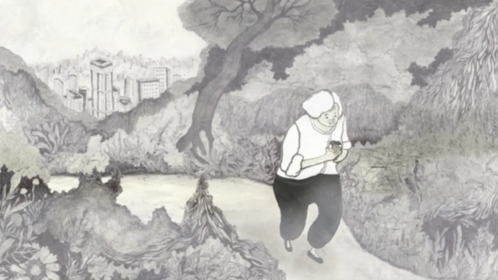
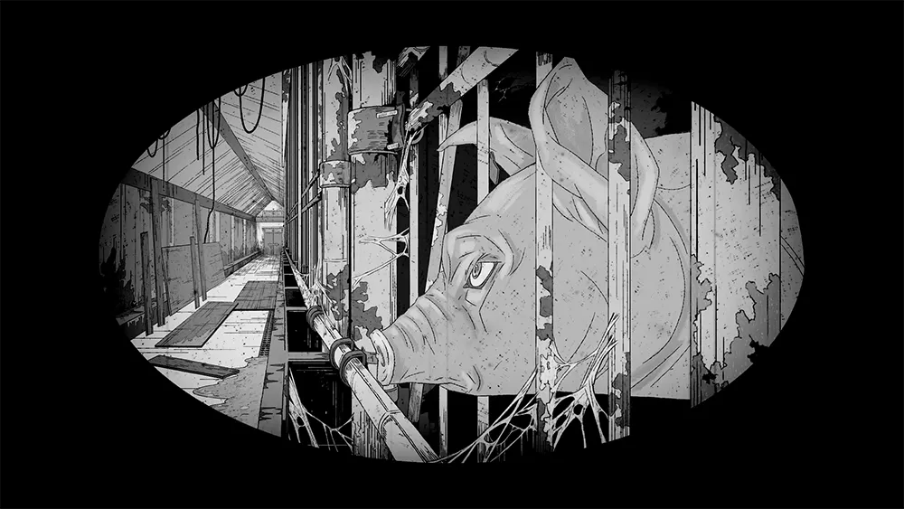
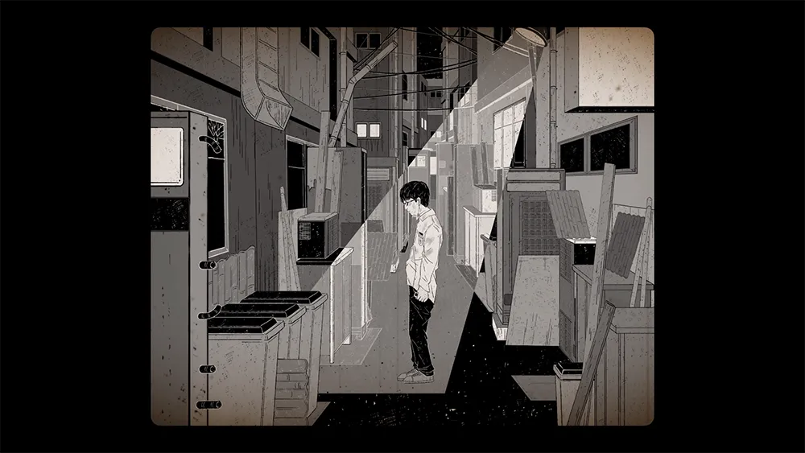
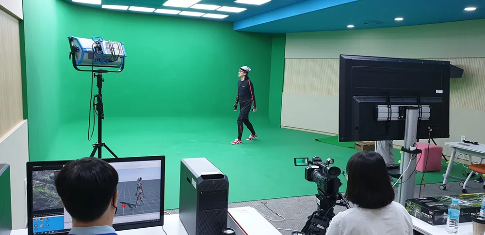
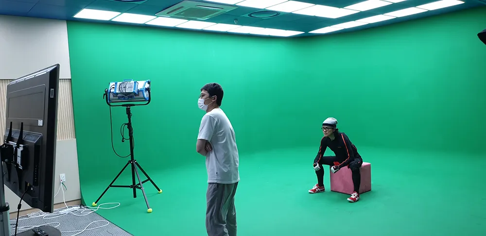

땅이 기름지지 못하고 몹시 메마른 상태. ‘척박하다’는 단어의 사전적 정의다. 그러니까 척박하다는 단어를 동원할 때에는 필시 ‘가능성’에 대해 논할 수밖에 없다. 그것이 한국 애니메이션을 논할 때 가능성이란 단어가 자석처럼 달라붙는 이유다. 한국 애니메이션은 늘 가능성을 고대해 왔고, 여전히 고대하고 있다. 말 그대로 척박한 제작 환경 속에서도 애니메이션을 길이라 믿고 꿈꾸는 이들이 있었고, 있기 때문이다.
‘제2의 연상호’라고도 불린 고(故) 허범욱 감독은 바로 그 가능성이었다. 일찍이 문학도를 꿈꿨던 허범욱 감독의 삶은 남산길을 걷다가 우연히 입장하게 된 서울애니메이션센터에서 운명을 만났다. 실험적이고 진취적인 캐나다 국립영화위원회(NFBC) 단편 애니메이션 특별 상영회를 관람하고 이슈 파텔 감독의 강연을 듣게 된 이후로 애니메이션 감독을 꿈꿨다. 이후 공부와 수련을 거듭하며 완성한 3편의 단편과 2편의 장편을 통해 한국 독립애니메이션을 대표하는 이름으로 떠올랐다.
허범욱의 작품은 대체로 냉소적이되 비관적이지 않고, 때때로 파괴적이지만 악의적이지 않다. 사회나 체제 안에서 소외되거나 폭력적으로 억압된 이들의 극렬한 내면 심리를 들여다보며 치열하게 그려내고, 개인에 대한 연민과 도덕적인 관점을 충돌시키며 드러낸 도발적인 문제의식은 가시처럼 돋아난 물음으로 자라난다. 그렇게 허범욱 감독은 연상호라는 이름에 비견되는 것을 넘어 자기만의 인장을 찍어나갔다. 꾸준히 개인과 사회를 아우르는 독자적인 관점을 제시하고, 도전적인 질문을 던지고, 사유를 강권하는 동시에 다채로운 표현 양식을 거듭 시도해 왔다. 아류로 평가된 것이 아니라 대를 이을 적자였다.
안타깝지만 허범욱이라는 이름에 걸었던 가능성은 더 이상 현재진행형이 아니다. 갑작스러운 사고로 세상을 떠난 그의 신작은 유작이 됐고, 한국 독립애니메이션의 척박한 현실을 갈음할 날은 보다 요원해졌다. 그럼에도 불구하고 허범욱의 이름으로 남긴 5편의 장단편은 ‘척박’과 ‘가능’을 클리셰처럼 두른 한국 애니메이션에 비옥한 미래를 기약하도록 나아간 유산으로 회자될 것이다. 그래야 마땅하다.
가고자 했던 길로 가고자, 하고자 했던 말을 하고자, 허범욱은 애니메이션을 선택했고 진심으로 갈망하고 탐구하며 애정해온 한 사람이었다. 그렇게 도전했고 증명하던 길이자 꿈이었다. 추모와 애도를 넘어, 언젠가 한국 애니메이션의 광야에서 불러볼 그 이름을 기억해 본다. 허범욱, 다시 돌아올 그대 위해.
<평범한 식사>(2009)
평범한 남자가 키우던 반려동물이 끝없이 허기를 느끼며 결코 평범하지 않은 상황으로 진전되는 7분짜리 단편 애니메이션. 헝가리 감독 피터 폴디스의 실험적인 단편 애니메이션 <헝거>(1974)의 영향을 받은 허범욱 감독의 첫 번째 단편.



(제공=KAFA)
<선량한 인간들의 도시>(2011)
6개월 전 실종된 손자가 살아 있으리라 믿던 할머니는 직접 손자를 찾아 나선다. 수묵화와 추상화를 연상시키는 회화적인 표현 기법을 활용한 단편 애니메이션으로, 폭력으로 무너진 가족과 공동체 속에서도 선량함의 의미를 되묻는다.
<창백한 얼굴들>(2014)
사물도 사람도 모두 무채색인 행성에서 유일하게 피부색을 띠고 있는 한 소년은 차별로부터 살아남기 위해 고군분투하다 낯선 무리에 합류하게 된다. 허범욱 감독의 첫 장편 애니메이션으로 컷아웃, 페인팅 온 글라스 등 다양한 기법을 활용했다.
<갈라파고스>(2019)
어머니를 살해하고 안방에 시체를 방치한 채 생활을 이어간 고등학생 소년의 고립된 처지와 가려진 진실에 주목하기 시작한다. 2D와 3D, 스톱 모션과 퍼펫 애니메이션까지, 다양한 표현 기법을 활용해 인물의 폐쇄된 심리를 입체적으로 묘사한다.
<구제역에서 살아 돌아온 돼지>(2026)
구제역 살처분에서 살아남은 돼지와 군대 내 부조리에 시달리다 탈영한 청년이 갑작스럽게 다른 존재로 변신한 뒤 산속에서 생존해 나간다. 2D와 3D를 결합한 작화에 모션 캡처 작업을 동원하며 비현실적인 설정을 현실감 있게 그려내고 설득한다.
* 이 글은 스포일러를 포함하고 있습니다.
허범욱 감독의 유작 <구살돼지>가 10월 21일 개봉한다. 허범욱 감독은 불의의 사고로 세상을 떠나기 전 <구살돼지>의 처음 개봉 시기에 맞춰 웹진 한국영화와 인터뷰를 진행했다. 이후 두 달이 흘러 다시 개봉일이 확정되면서, 그의 마지막 인터뷰를 싣는다.
Q 2024년도에 처음 공개된 <구제역에서 살아 돌아온 돼지>(이하 <구살돼지>)의 정식 개봉이 2주 남짓(편집자 주 – 인터뷰는 7월 16일, 당시 개봉 예정일은 8월 5일이었다)으로 남았다. 기분이 어떤가?
고생해 준 스태프에게 면목이라도 설 것 같아 우선 다행이다. 기쁘면서도 다양한 감정이 밀려온다. 솔직히 개봉은 못할 줄 알았다. 장편 애니메이션 개봉 지원사업이 공교롭게도 거의 다 없어졌더라. 작년까지는 조금 있었는데 올해에는 그랬다. 그래서 개봉에 대한 기대를 접고 있던 차에 경기콘텐츠진흥원에서 배급 지원사업을 운영한다는 소식을 듣고 부랴부랴 신청했는데 다행히 영화를 잘 봐주신 덕분에 지원을 받았고 이렇게 개봉할 수 있게 됐다.
Q 지난 5월 일본에서 11개 상영관 규모로 개봉했다고 들었다. 한국보다도 일본에서 먼저 개봉할 수 있었던 배경이 궁금하다.
이제 거의 다 내려갔을 텐데, 한때에는 15개 관까지 늘었다고 하더라. <구살돼지>가 2025년에 니가타국제애니메이션영화제 경쟁 부문에 출품됐는데 일본에서는 유일하게 장편 애니메이션만 상영하는 영화제라고 한다. 그래서 업계 관계자분들이 많이 주목한다더니 <구살돼지>의 경쟁 부문 진출 소식이 공식적으로 알려지자마자 일본 수입사에서 한번 만나자고 연락이 왔고, 결국 계약하게 됐다.
Q<구살돼지>는 구제역 유행 당시 돼지를 살처분하는 모습에서 모티프를 얻은 작품으로 알고 있다. 주인공인 ‘돼지 H’의 이름에서 알파벳 ‘H’는 ‘휴먼’을 의미한다고 들었다. 하지만 영화상에서 돼지 H를 호명하는 순간은 없다. 엔드 크레디트에 기재된 정보를 확인하지 않는다면 인식할 수 없는 이름이다. 그런 의미에서 그렇게 명명한 이유를 직접 들어보고 싶다.
일단 주인공을 그냥 ‘돼지’라고 하긴 좀 그랬다. 좀 더 특별한 이름을 부여하고 싶었지만 돼지끼리 “내 이름은 OO야”라는 식으로 자기소개를 하진 않을 테니 사람 같은 이름을 붙이는 것도 일방적인 의인화 같아서 싫었다. 하지만 캐릭터 이름을 명명하는 순간 캐릭터가 보다 명확하게 보인다고 생각하기 때문에 ‘돼지 H’라는 이름을 붙여서 스태프와 공유했다.
Q 또 다른 주인공인 탈영병 최정석은 돼지 H와 유사하면서도 끝내 상반된 존재다. 둘 다 일방적인 폭력의 피해자라는 점에서는 공통적이나, 바라보는 곳은 정반대라 마치 대칭이 뒤집혀 포개지지 않는 데칼코마니를 보는 듯한 인상이다. 돼지 H로부터 시작된 이야기가 최정석과 연결된 과정이 궁금하다.
돼지 H만으로 이야기를 써보니까 재미가 없었다. 캐릭터 하나가 더 필요하다는 걸 알게 됐고, 주인공 돼지와 비슷한 처지의 인간이 있다면 어떨까 생각해 봤다. 어릴 때부터 괴롭힘을 당하고, 군대에 가서도 똑같은 괴로움을 겪어야 하는, 계속 당하기만 하면서도 도망칠 수 없는 처지에 놓인 이가 있다면 살처분당한 돼지와 비슷한 감정을 느끼지 않을까. 그래서 돼지 H와 함께 배치해 놓고 보니까 돼지는 인간이 되고 싶을 것 같고, 괴롭힘당한 사람은 인간이 되고 싶지 않을 것 같았다. 이렇게 진전시킬 수 있는 이야기 흐름이 보였다.


허범욱 감독은 살처분당한 돼지, 괴로움을 겪는 인간의 처지를 같은 선상에서 바라보았다(제공=인디스토리)
Q 폭력에 내몰린 인물을 군대 내 부조리 피해자로 선택한 건 살처분이 시행된 주 지역인 강원도를 영화의 주 무대로 설정한 것과 무관하지 않을 것 같다. 아무래도 군부대가 많은 지역이기도 하니까.
확실히 염두에 둔 부분이다. 인물의 루트를 만들어내는 데 있어서도 유리했다. 강원도는 산지이기도 하지만 바닷가이기도 하니까. 산에서 바다로 다다르는 동선을 이용한 이야기 흐름을 만들어 보고 싶었다. 그리고 같은 공간에 있고 서로에게 간접적인 영향은 미치지만 직접적으로 이어지지 않는 관계를 설정하기에도 유리하게 느껴졌다.
Q 돼지 H와 최정석은 끝까지 만나지 못하고 서로의 존재를 모른다. 둘이 만난다는 설정 자체가 애초에 배제된 인상이다.
둘 다 산에 있음에도 만나지 않게 만든다는 건 시나리오 초기부터 정해진 부분이었다. 그런데 시나리오 리뷰를 받는 과정에서 돼지 H와 최정석이 만나야 한다고, 그렇게 둘이 함께 어떤 과정을 거치면서 엔딩까지 도달해야 한다는 의견을 정말 많이 받았다. 그런데 계속 의문이 생겼다. 실제로 둘이 만나는 시나리오도 몇 차례 써봤지만 계속 이건 아니라는 생각만 강해졌다. 둘이 만나서 뭔가 함께 도모한다는 게 너무 뻔한 얘기처럼 보였다. 내가 원한 건 각자가 처한 상황에서 벌어지는 일들을 보여주고 저마다 어떻게 절망에 빠지는지, 원하는 목표에 과연 도달할 수 있는 것인지 이야기함으로써 관객에게 질문을 던지는 것이었으니까. 게다가 애초에 둘은 하나로 연결된 존재라고 생각했기 때문에 직접 만날 필요가 없다고 생각하기도 했다. 그런 의도가 포스터 이미지에도 반영됐다.
Q 덕분에 돼지 H와 최정석의 이야기가 이중 플롯으로 진전되면서 입체감 있는 결말이 만들어진 것 같다. 두 주인공이 각기 도달하는 결말은 제각각 독립적이지만 결국 한 세계 안에서 유기적인 인과로 연결돼 있다. 그런 면에서 평행선을 달리듯 나뉘어 있으나 결국 한 몸을 이루는 듯한 지금의 결말을 완성하기까지 적잖은 고민이 있었을 것 같다.
가장 많이 생각한 건 인간다움에 관한 것이었다. 좀 더 구체적으로는 인간답게 죽는다는 건 무엇일까 생각했다. 최정석의 죽음을 그릴 필요는 없을지 몰라도 그렇게 변신한 상태로 인간 세상에 다시 내려간다면 이전보다 더한 고통에 시달릴 것이 분명하니 산에서 죽음을 맞이하게 해주는 것이 옳다고 생각했다. 그래서 그에게 가장 인간다운 죽음을 주고 싶었고 그런 죽음이 무엇일까 고민하다 지금의 결론에 다다랐다. 반면 인간이 되길 바라는 돼지 H의 결말은 좀 더 모호하게 만들고 싶었다. 돼지 H는 끝내 바라듯 인간이 된 것인지 아닌 것인지 정확히 알 수 없는 상태에서, 그가 내린 마지막 선택을 통해 물음을 만들고자 했다. 인간이 되고 싶어 했던 그가 마지막까지 노력하는 방식이란 결국 돼지로서 관찰한 경험 안에 갇혀 있다. 그리고 돼지 H가 수인이 돼서 바라본 숲의 인간들은 목을 매단 채 자살한 이들이 대부분이다. 그가 이해한 인간이란 끝내 그런 존재였을지도 모른다고 생각했다. 그래서 돼지 H의 마지막 행동은 돼지로서 그가 이해한 ‘인간다움에 대한 이해’를 보여준 것이었다. 그리고 그러한 인간다움을 선택한 돼지 H는 과연 성공한 것인지, 관객 스스로 질문을 받고 고민하길 바라는 마음이었다.
Q 돼지 H가 인간으로 변신한다는 건 자연스러운 인과이지만 그에 대응하는 최정석이 끝내 무엇으로 변신해야 할지 선택하는 건 상대적으로 어려운 문제였을 것 같다.
최정석이 동물이 되면 어떨지, 어떤 형태로 변해야 할지 고민하는 과정에서 만약 내가 그의 입장에서 짐승이 되겠다고 한다면 무엇을 원할까 생각해 봤다. 겉으로 보기에도 힘이 세고 남성성이 뚜렷한 존재가 되길 바랄 것 같았다. 그리고 산에 있는 존재라고 하니 문득 빅풋이 떠올랐다. 주로 북미 지역에서 목격했다는 소문으로만 언급되는 비현실적인 존재이니 애니메이션으로 표현하기 적절한 소재라고 판단했다.
Q<구살돼지>에서 빅풋이 된 최정석이 머무는 숲은 자살하러 오는 사람들의 명소로 보인다. 곳곳에 목을 매달고 죽은 이들이 자연스럽게 방치된 풍경이 너무 생경해서 오히려 어떤 현실을 반영한 결과가 아닐까 되레 궁금했다.
큰 선에서 보자면 세 가지 설정이 조합됐다. 일단 산은 외형적으로 군부대가 인접한 강원도의 산으로 설정돼 있지만 산 내부는 일본의 자살숲으로 알려진 ‘아오키가하라’라는 곳을 참고했다. 실제로 자살하려는 사람들이 많이 찾는 숲으로 유명해서 관련 다큐나 영화도 있을 정도다. <구살돼지>의 주 배경인 산 내부의 숲은 그곳의 설정을 가져왔고 목을 매달고 죽은 사람들의 사진을 참고해서 주요한 분위기를 만들었다. 그런데 실제로 한국은 자살률이 높은 나라이기 때문에 그런 설정 자체가 그렇게 이상하지 않을 것 같더라. 특히나 젊은 사람들의 자살률이 높은 편이기도 하고, 이런 사실을 한국 사람들도 익히 다 알고 있으니까. 이렇게 세 가지 설정을 바탕에 두고 묘사했다.
Q<구살돼지>는 언뜻 보기엔 2D 애니메이션처럼 보이지만 3D 작업으로 완성한 작품이라고 알고 있다.
원래는 전작들과 마찬가지로 2D로 제작할 생각이었다. 그런데 제작비를 감당할 수 있을까 의문이 생겼다. 첫 장편 작업처럼 갓 졸업한 학생들을 모아서 해볼 수도 있겠지만 완성도가 떨어질 수밖에 없는 방식으로 또 한 번 힘든 과정을 겪어야 한다는 것에 대한 회의감도 있었다. 결국 3D 작업은 대안이었다. <구살돼지>가 2D 애니메이션처럼 보이는 건 배경은 완벽하게 2D로 만든 덕분이다. 하지만 캐릭터는 3D로 모델링한 뒤 필드를 만들어 2D처럼 보이게 만들었다.
Q 캐릭터의 동작은 모두 전문 배우를 섭외해 모션 캡처를 진행해서 애니메이션 작업을 했다고 들었다. 모션 캡처 작업을 시도하게 된 계기가 궁금하다.
모션 캡처는 언젠가 써보고 싶다고 생각했는데 <구살돼지>의 공동제작사 크리에이티브섬 대표님께서 캐릭터 구현을 3D로 하는 만큼 이번 기회에 한번 시도해 봐도 좋겠다고 권하셨다. 다른 회사가 진행 중인 모션 캡처 작업 현장을 직접 견학했고 충분히 가능하다는 확신을 갖게 됐다. 그래서 2021년쯤 모션 캡처 촬영을 진행했는데 적지 않은 시행착오를 겪었고, 소스 수정 작업량도 상당했다. 2D처럼 보이기 위해서는 동작이 부드럽기보단 조금씩 끊기듯 부자연스러운 게 보다 적절했기 때문에 오히려 프레임을 걷어내는 작업을 진행하기도 했다.
Q 극 후반부에 실비아 플라스의 시 ‘아빠’를 인용한 장면이 등장한다. 남편의 외도에 고통받았던 시인 실비아 플라스가 자살하기 직전에 쓴 시로도 알려져 있다. 빅풋이 된 최정석의 곁에 자리한 유지인이라는 인물의 전사를 드러내는 유일한 단서처럼 보이기도 한다.
실비아 플라스는 가정 문제와 여러 고통을 겪다가 오븐에 머리를 넣고 죽었다. ‘아빠’는 그녀가 남긴 유서와 같다. 그러니 실비아 플라스의 시를 바이블처럼 품고 다니는 인물이라면 그것만으로도 설명해 주지 않은 많은 부분들이 해소될 거라 생각했다. 물론 실비아 플라스를 모르는 사람이라고 해도 영화를 보고 궁금해서 그녀에 대해 검색해 본다면 뒤늦게 이해할 수 있을 거다. 그렇게 유지인이라는 인물에 대한 설명을 실비아 플라스의 시로 대체한 셈이다.
Q 원래 실비아 플라스에 대해 관심이 있었던 걸까? 아니면 유지인이라는 인물에 관한 고민이 실비아 플라스를 알게 되는 과정으로 연결된 걸까?
고등학교 시절 꿈이 시인이었다. 고등학교 문학 선생님이 <한 그리움이 다른 그리움에게>라는 시집을 내신 정희성 선생님이었다. ‘저문 강에 삽을 씻고’라는 시도 유명했고, 후에 돌아가셨을 때 신문에 부고가 실릴 정도였다. 첫 수업을 하실 때 자기 시를 읽어주셨는데 왜소한 체격과 달리 목소리가 은은하게 막 퍼지더라. 그때 반해서 시를 찾아 읽고 공부했다. 기형도 시인을 비롯해 한국의 시인부터 시작해서 결국 실비아 플라스까지 닿게 됐다. 사실 그때에는 너무 어려서 실비아 플라스의 시가 어떤 감정인지 잘 몰랐던 것 같은데 <구살돼지>의 유지인에 대해 생각하다 보니 실비아 플라스가 문득 떠올랐다. 이 아이가 그런 처지가 아닐까. 그렇다면 그 시를 가져와서 써봐도 좋을 것 같았다.


허범욱 감독은 모션 캡처를 활용해 <구제역에서 살아 돌아온 돼지> 캐릭터들의 움직임을 생생하게 구현했다(제공=인디스토리)
Q 10년 만에 두 번째 장편 애니메이션을 완성했다. 그만한 성취감을 느낄 수도 있겠지만 그만큼 고된 여건에 대한 인식 또한 역력해지진 않았을까?
사실 그다음 단계를 바라볼 수 있는 여력이 있는 건지 솔직히 잘 모르겠다. 두 번째 장편을 만들기까지 10년이 걸렸는데 세 번째도 10년이 걸린다면 이걸 계속할 수 있는 일이라고 생각할 수 있을까? 심지어 영화계 상황이 점점 좋아지지 않는 현실에서 애니메이션 제작 여건은 더더욱 좋을 리 없을 테니까. 그 와중에 애니메이션 제작 지원사업도 거의 사라지는 상황 속에서 TV나 온라인동영상서비스(OTT) 상영이 아니라 극장판으로 제작하는 독립애니메이션의 미래가 과연 한국에 있는 걸까? 다들 없는 제작비로 꾸역꾸역 만들고 있는 현실에서 언제까지 버틸 수 있을까? 정말 이런 고민이 점점 커지는 게 사실이다.
Q 그럼에도 불구하고 혹시 차기작으로 준비하거나 구상하는 작품이 있을지 궁금하다.
애니메이션으로 만들고 싶은 원작 소설이 몇 권 있다. 과연 판권을 살 수 있을지 모르겠지만 이탈로 칼비노의 <나무 위의 남작>이나 <반쪼가리 자작> 같은 소설을 영어 기반의 애니메이션으로 만들어 보고 싶다는 생각은 예전부터 하고 있었다. 만약 가능하다면 이탈리아 원작의 설정대로 만들어야 할지, 한국적으로 각색해야 할지 모르겠지만 기회가 되면 해보고 싶다. 그리고 몇 가지 아이디어가 있다. 얼굴에 이목구비가 하나씩 없어지는 사람에 대한 이야기를 오래전부터 생각해 왔다. 아직 시나리오를 쓴 건 아니고 설정 정도만 갖고 있는 상황이다. 술 좋아하는 가족에 대한 이야기도 있다. 사실 이건 우리 가족에 대한 이야기이기도 하다. 우리 가족들이 다 술을 좋아하지만 나만 싫어하는 상황이라 이에 대한 이야기를 한국영화아카데미(KAFA) 지도 교수였던 오승욱 감독님에게 했더니 그걸 작품으로 만들어 보라고 하셨다.
Q 흥미로운 아이디어다. 당장 장편 제작이 어렵다면 우선 단편으로 만들어봐도 좋을 것 같다.
바라는 일이다. 가능하다면 정말 해보고 싶다.
<구제역에서 살아 돌아온 돼지> 메인 예고편